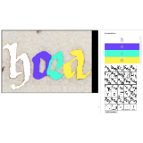

|
Chan Hee (Luke) Song
I am a junior computer science student at the University of Notre Dame graduating in May 2020. From Seoul, Republic of Korea,
I've been blessed to live in the beautiful Notre Dame campus and gain experience as a computer science researcher.
Email /
Github /
LinkedIn
|
|
|
News
- 05/2019: I'll be in Baltimore, MD for the summer as a visitng research scholor at the HLTCOE participating in the SCALE program.
|
|
Research
I am interested in machine learning, especially Natural Language Processing. I have experience in machine translation and word embeddings,
and looking to explore problems of NLP before commiting myself to specific field.
This summer I'll be at the HLTCOE working on handling label sparsity and inconsistency
in Named Entity Recognition.
|
|
Sentence Representation for Neural Machine Translation Systems
Chan Hee Song, David Chiang
06/2018 ~
Independent undergraudate researcher under supervision of professor David Chiang.
I investigated the impact of sentence representation on neural machine translation to develop an optimal encoding mechanism that has a better trade-off between time and accuracy.
I am using C, Python and PyTorch library to build encoder/decoder, modify neural machine translation system, and implement new equations.
|
|  |
Verba Volant, Scripta Manent: Automatic Transcription of Medieval Latin Manuscripts
Undergraduate Research Assistant
01/2018 -> 05/2018
poster
Research assistant to the project which aims to find a novel method to process Vatican Secret Archives to transfer early Medieval Latin handwritten papers into a computer readable format.
I analyzed various character recognition algorithm and used Python to build an auto analyzer tool for Optical Character Recognition systems
|
|
Kyndi
Software Engineering Intern
01/2019 -> 05/2019
I migrated in-memory graph to external database by building a GraphQL server to interact with the external database using Apollo and Typescript.
Also improved accuracy and representation of the knowledge graph by writing unique graph operations on a large knowledge graph.
|
|
{kind=link}